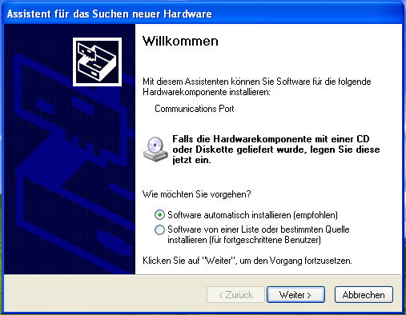
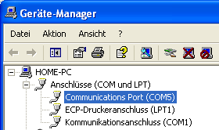

Status: fertig
?ber eine Adapterplatine mit RS232- oder RS485-Wandler k?nnen die entsprechenden Busse direkt ?ber einen virtuellen Com-Port angesprochen werden, den die Firmware bereitstellt.
Pinbelegung
RxD = Pin 6 der 10-poligen Schnittstelle
TxD = Pin 4 der 10-poligen Schnittstelle
GND = Pin 10 der 10-poligen Schnittstelle
Download
Die Firmware ist im AVR USB-Lab Tool enthalten.Installation
Nachdem das Lab angesteckt wurde, fragt Windows nach einem Treiber. Diesen bringt es selbst mit, allerdings muss mitgeteilt werden, welcher Treiber zu diesem Ger?t geh?rt. Das macht man mit einer INF Datei, die hier heruntergeladen werden kann (enthalten im USB AVR Lab Tool).

W?hlen Sie "Software von einer Liste oder bestimmten Quelle installieren.
W?hlen Sie im n?chsten Dialog das Verzeichnis, in dem Sie die .inf gespeichert haben.
Wenn Sie nun den Anweisungen folgen, sollte nach Abschluss des Assistenten im Ger?temanager ein zus?tzlicher COM-Port zu finden sein.

Nun ist der Wandler bereit.Anzeigeelemente
- blaue LED: Sie zeigt die PC-Verbindung an
Betriebsysteme
Windows XP
Windows XP 64
Windows Server 2008
Windows Vista 32bit
Windows 7 32bit